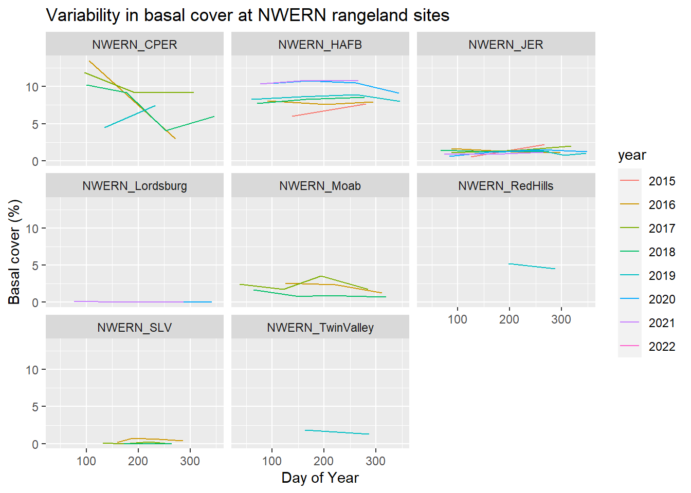

# calculate basal cover by speciesbasal_cover <-pct_cover_species(lpi, hit ="basal", by_line =TRUE)# calculate total basal covertotal_basal_cover <- basal_cover %>%group_by(PrimaryKey, LineKey) %>%summarise(percent =sum(percent))# join back with site visits so we can summarize by sitetotal_basal_cover <-left_join(site_visits, total_basal_cover) %>%# make sure DateVisited is considered a datemutate(DateVisited =as.Date(DateVisited), julian_day =yday(DateVisited), year =year(DateVisited) %>%as.factor())# summarise to plottotal_basal_cover_summary <- total_basal_cover %>%group_by(PrimaryKey) %>%summarise(mean =mean(percent), sd =sd(percent)) %>%left_join(total_basal_cover, .)# plotggplot(total_basal_cover_summary %>%# only look at rangeland sitessubset(ProjectKey %in%c("NWERN_JER", "NWERN_CPER", "NWERN_HAFB", "NWERN_Lordsburg", "NWERN_Moab", "NWERN_RedHills", "NWERN_SLV", "NWERN_TwinValley" )), aes(x = julian_day, y = mean, group = year, color = year)) +facet_wrap(. ~ ProjectKey) +geom_line() +labs(title ="Variability in basal cover at NWERN rangeland sites",x ="Day of Year",y ="Basal cover (%)")

Compare to total foliar cover variability
# calculate basal cover by speciestotal_foliar_cover <-pct_cover_total_foliar(lpi)# join back with site visits so we can summarize by sitetotal_foliar_cover <-left_join(site_visits, total_foliar_cover) %>%# make sure DateVisited is considered a datemutate(DateVisited =as.Date(DateVisited), julian_day =yday(DateVisited), year =year(DateVisited) %>%as.factor())# plotggplot(total_foliar_cover %>%# only look at rangeland sitessubset(ProjectKey %in%c("NWERN_JER", "NWERN_CPER", "NWERN_HAFB", "NWERN_Lordsburg", "NWERN_Moab", "NWERN_RedHills", "NWERN_SLV", "NWERN_TwinValley" )), aes(x = julian_day, y = TotalFoliarCover, group = year, color = year)) +facet_wrap(. ~ ProjectKey) +geom_line() +labs(title ="Variability in total foliar cover at NWERN rangeland sites",x ="Day of Year",y ="Total foliar cover (%)")